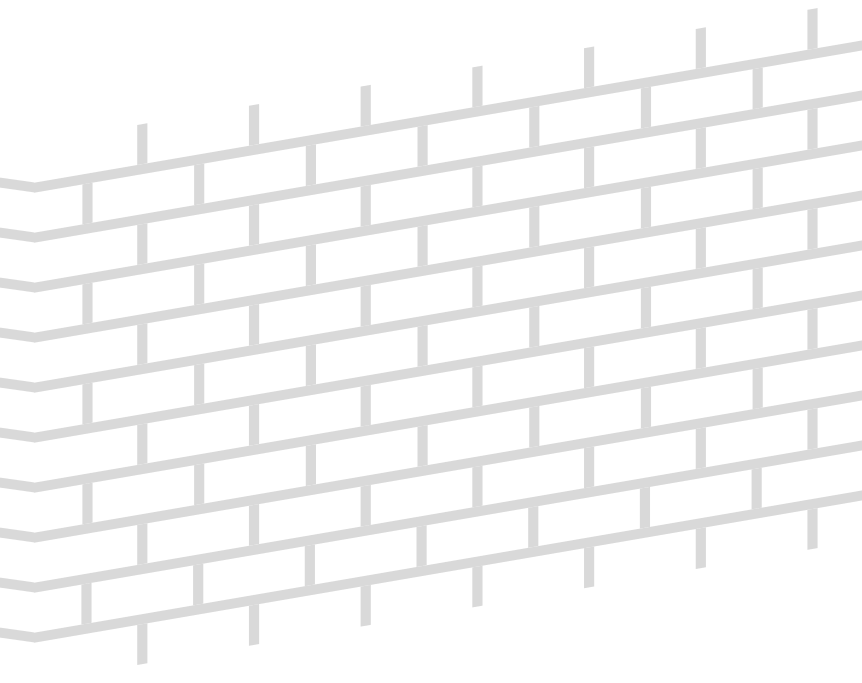
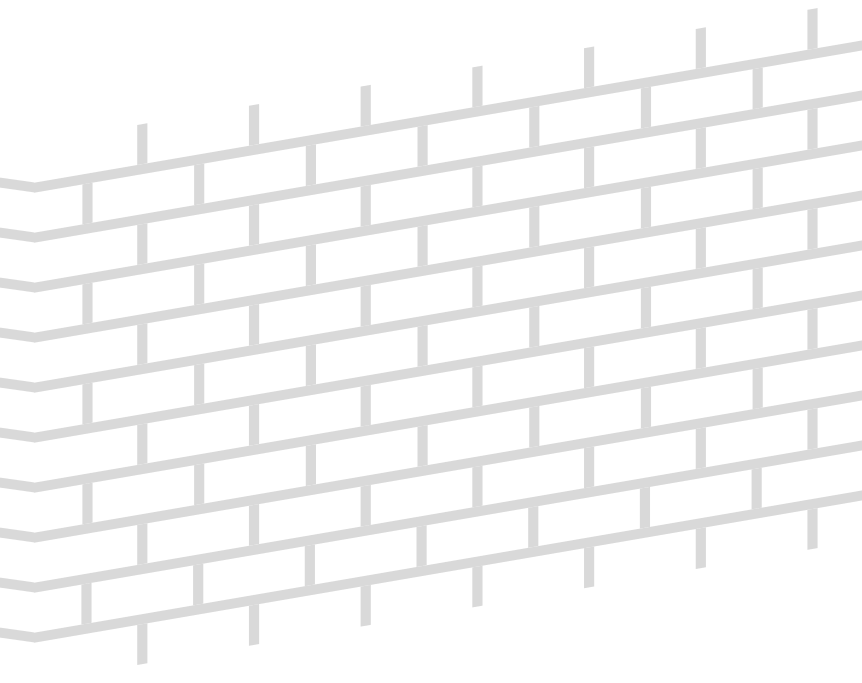

підготовка стіни до монтажу
Для поклейки плитки підходить будь-яка стіна. Орієнтовна вага бетонної плитки під цеглу 20 кг/кв.м, а фасадного каменю 40 кг/кв.м
закріплюємо утеплювач
Бетонну плитку можна клеїти на утеплювач: мінеральна вата, стіродур (пінополістерол), пінопласт чи інше. Якщо ваш будинок буде утеплений "мінватою" стіну необхідно поштукатурити.
наносимо грунтовку
Ми рекомендуємо використовувати грунтовку глибокого проникнення.

Важливо грунтувати поверхню безпосередньо в день або за день перед монтажем плитки. Якщо біля стіни проводились будівельні роботи з сипучими сумішами (пильними) в цих місцях стіни адгезія може погіршитись.
кріпимо монтажну сітку
Для того, щоб плитка не відпадала і довго служила, на стіну потрібно набити монтажну сітку. Можна використовувати металеву сітку (товщина від 2мм, комірка 1х1 см), або капронову сітку (щільністю не менше 160 г/кв.м). Краще використовувати капронову сітку, оскільки вона не деформується під впливом температури, на відміну від металевої сітки.

Важливо! Сітка має бути в основі клею, немов створюючи разом з цеметним клеєм каркас.Сітка має монтуватись в "захльост", аби на місці стику сітки не утворювались тріщини.
закріплюємо сітку до стіни
Монтажна сітка кріпиться дюбєлями зі шляпками до опорної стіни. Це гарантує, що плитка разом з клеєм не почне відпадати від стіни якщо, наприклад, будинок дасть усадку, або після морозу.
наносимо клей
Рекомендуємо використовувати морозостійкий клей для каменю Ceresit СМ-117 або аналогічний. Витрати клею становлять від 3-5 кг/кв.м залежно від рівності стіни та товщини слою клею.


Важливо! Клей має бути відносно свіжий. Паперові мішки з сухою сумішшю мають бути у відмінному стані, без пошкоджень.Якщо мішок намок, був порватий - адгезія клею буде жахливою, а плитка після монтажу може почати відпадати.
клеїмо плитку до стіни
Перед монтажем, потрібно розкласти з упаковки невелику кількість плитки слідкуючи, щоб по кольорам вона була викладена хаотично. Найкраще, навіть одночасно брати плитку з різних упаковок. Важливо! Найкраще клеїти плитку при температурі 10-25 градусів тепла.Якщо на вулиці жарка суха погода, плитку перед монтажем радимо дещо змочити в воді (окунути у воду), аби плитка після поклейки не витягувала воду з клею, що може погіршити адгезію.
Наша плитка є декоративним матеріалом, яка відтворює цегляну кладку. А в деяких колекціях навіть передбачено різний розмір плиток з упаковки. Тому, класти ідеально рівно не обов'язково. Але контролюйте, аби плитка була викладена по горизонтальним направлючим. Використувуйте для цього лазерний рівень, або ж використовуйте шнур натягнутий по горизонталі як вказівник.
Підрізана плитка кидається в очі, старайтесь за можливості не вставляти шматочки плитку у цегляну кладку, а попередньо викладати плитку, а регулюючи розмір шва (відстань між плитками по горизонтаді) мінімізувати кількість підрізки. Важливо! Якщо плитка замастилась клеєм чи затиркою в процесі монтажу, розчинники використовувати не можна!Дайте забруднику трішки схватитись, і зчистіть зайвий клей/затирку капроновою щіткою.
затираємо шви
Затирка може наноситись в 2 способи, залежно від її виду. Звичайна затирка, попередньо замішана у відрі до консистенції сметани, наноситься безпосередньо у шов з будівельного пістолета.


Напівсуха затирка (рихлої консистенції, нагадує дещо вологий пісок) вдавлюється в шов спецільною кельмою для розшивки клінкерної плитки (дуже маленький шпательок шириною до 1см).

Важливо! Затирку, особливо темних кольорів, потрібно замішувати декілька разів, відповідно до інструкції виробника.Якщо якісно її не замішати, після висихання на поверхні затирки з'являться білі розводи.
Після нанесення, на невелику площу, шов розрівнюється кельмою для розшивки швів, формуючи напівкруглої форми заглибину між плитками.
Лишки затирки аккуратно відтираються від плитки капроновою щіткою. Якщо десь все ж лишились білі сліди від затирки, оскільки плитка дещо мажеться, можете розмазати фарбу-напилення на пляму.
Також зверніть увагу, що вибір кольору затирки є надзвичайно важливим. Від кольору затирки залежить кольорове сприйняття плитки: якщо затирка темна, хоч в загальному стіна буде здаватись темною, але колір плитки буде здаватись більш тьмяним, не насиченим. І навпаки, якщо затирка світла, то плитка буде на вигляд більш яскравішою, контрастною. Більше рекомендацій щодо видів цегляної кладки, як класти плитку на відкосах чи вікнах, та інше за посиланням.
наносимо на плитку захисне покриття
Фарбники плитки не вигоряють на сонці. Але можуть з часом вимиватись. Тому, для довготривалого збереження кольору плитку потрібно покрити акриловим лаком (на водній основі) для фасадних робіт, або гідрофобізатором для бетону.


Важливо! Покриття наноситься мінімум через тиждень після монтажу, або через 2-3 доби після дощу.В клеї, затирці є вода, яка через плитку має вийти назовні. По рекомендаціям виробників клею, повний цикл висихання клею на цементній основі близько 1 тижня. Якщо плитку покривати одразу після монтажу і не дати воді випаруватись з часом на плитці подекуди можуть з'явитись білі висоли.
Якщо дотримуватись цих рекомендацій, гарантія на колір плитки становить 20 років. А оскільки ми займаємось виробництвом плитки вже більше 25 років, клієнти, що купували плитку 20 років тому, і повертаються, щоб обкласти добудовані гаражі, господарські чи гостьові будиночки, підтверджують, що плитка досі радує око і зберігає колір.